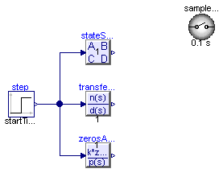
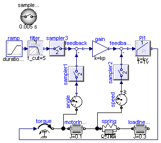
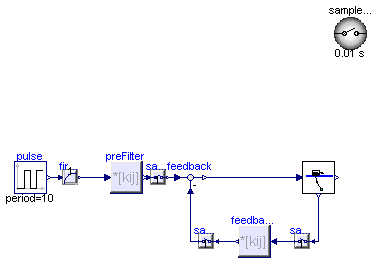
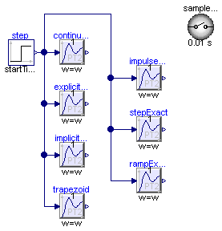
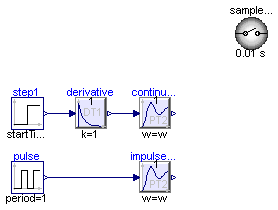
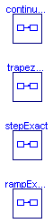
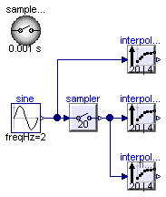

| Name | Description |
|---|---|
| First example to demonstrate representative block | |
| Simple P-PI cascade controller to control a flexible drive | |
| Crane trolley controlled by a state feedback controller | |
| Demonstrates the discretization methods | |
| Demonstrates the discretization method for impuls exact discretization | |
| Demonstrates the discretization methods for a series connection | |
| Demonstrate usage of Interpolator | |
| Contains components of the systems used in Examples package |
 Modelica_LinearSystems2.Controller.Examples.FirstExample
Modelica_LinearSystems2.Controller.Examples.FirstExample
| Type | Name | Default | Description |
|---|---|---|---|
| Real | w | 10 | |
| Real | D | 0.1 |
model FirstExample "First example to demonstrate representative block" import Modelica_LinearSystems2; extends Modelica.Icons.Example; parameter Real w=10; parameter Real D=0.1;Modelica.Blocks.Sources.Step step( startTime=0.5, height=1.2, offset=0.2); Modelica_LinearSystems2.Controller.StateSpace stateSpace( x_start={0.1,0}, initType=Modelica_LinearSystems2.Controller.Types.InitWithGlobalDefault.InitialState, system( A=[0,1; -w*w,-2*w*D], B=[0; w*w], C=[1,0], D=[0]), blockType=Modelica_LinearSystems2.Controller.Types.BlockTypeWithGlobalDefault.UseSampleClockOption); TransferFunction transferFunction(system(n={1,2}, d={1,2,3}), blockType= Modelica_LinearSystems2.Controller.Types.BlockTypeWithGlobalDefault.UseSampleClockOption); ZerosAndPoles zerosAndPoles(system( n1={1}, n2=fill( 0, 0, 2), d1=fill(0, 0), d2=[1,1; 1,1]), blockType=Modelica_LinearSystems2.Controller.Types.BlockTypeWithGlobalDefault.UseSampleClockOption); inner SampleClock sampleClock( sampleTime=0.1, blockType=Modelica_LinearSystems2.Controller.Types.BlockType.Continuous); equationconnect(step.y, stateSpace.u[1]); connect(transferFunction.u, step.y); connect(zerosAndPoles.u, step.y); end FirstExample;
Modelica_LinearSystems2.Controller.Examples.SimpleControlledDrive
This example demonstrates the control of a simple model of a flexible drive system with a continuous or discrete P-PI cascade controller. Simulate for 3 s and plot
ramp.y (reference angle of loadInertia) loadInertia.phi (angle of loadInertia) loadInertia.w (speed of loadInertia) torque.tau (motor torque)
The standard setting in component sampleClock models a continuous controller. This means that all 3 samplers are just dummy components containing the equation "y=u" and that the PI component in the controller is a continuous PI controller.
Change sampleClock.blockType to "Discrete" block. By this global setting, the 3 sampler blocks and the PI speed controller are transformed into a discrete representation. The base sample time is defined in component sampleClock (= 0.02 s). Every discrete component samples its input and output. The sampling time of every component is a multiple of the base sample time (defined via parameter sampleFactor). Here, the sampler and the PI speed controller are sampled with the base sample frequency. The sample time of the 2 samplers and of the P position controller is a factor of 5 slower.
When comparing the simulations of the continuous and the (more realistic) discrete representation, it turns out that the discrete control systems works a bit worse. This can be improved by reducing the sample time in sampleClock.
The Controller library has several blocks to model this system even more realistically, e.g, by component AD converter to model the quantization errors of the analog measurement signals, component DA converter to model the quantization errors and computing time to determine the analog actuator (torque) signal, and component Noise to add uniformly distributed noise to the measurement signals.
In the following figure simulation results of the discrete and of the continuous controller are shown:

Extends from Modelica.Icons.Example (Icon for an example model).
| Type | Name | Default | Description |
|---|---|---|---|
| Real | kp | 10 | Gain of P position controller |
| Real | kv | 9 | Gain of PI speed controller |
| Time | Tv | 0.05 | Time constant of PI speed controller [s] |
model SimpleControlledDrive
"Simple P-PI cascade controller to control a flexible drive"
extends Modelica.Icons.Example;
parameter Real kp = 10 "Gain of P position controller";
parameter Real kv = 9 "Gain of PI speed controller";
parameter Modelica.SIunits.Time Tv = 0.05
"Time constant of PI speed controller";
Modelica.Mechanics.Rotational.Components.Inertia motorInertia(J=0.1);
Modelica.Mechanics.Rotational.Components.Inertia loadInertia(J=0.3);
Modelica.Mechanics.Rotational.Components.SpringDamper spring(c=1e5, d=100);
Modelica.Mechanics.Rotational.Sources.Torque torque;
inner SampleClock sampleClock(sampleTime=0.005, blockType=
Modelica_LinearSystems2.Controller.Types.BlockType.Discrete);
Modelica.Blocks.Sources.Ramp ramp(duration=2);
Filter filter(
f_cut=5,
analogFilter=Modelica_LinearSystems2.Types.AnalogFilter.Bessel,
blockType=Modelica_LinearSystems2.Controller.Types.BlockTypeWithGlobalDefault.Discrete);
Sampler sampler3(sampleFactor=2);
Modelica.Blocks.Math.Feedback feedback;
Modelica.Blocks.Math.Gain gain(k=kp);
Modelica.Mechanics.Rotational.Sensors.AngleSensor angle;
Modelica.Blocks.Math.Feedback feedback2;
PI PI1(k=kv, T=Tv,
blockType=Modelica_LinearSystems2.Controller.Types.BlockTypeWithGlobalDefault.Continuous);
Modelica.Mechanics.Rotational.Sensors.SpeedSensor speed;
Sampler sampler1(sampleFactor=2);
Sampler sampler2(sampleFactor=2);
equation
connect(motorInertia.flange_b, spring.flange_a);
connect(spring.flange_b, loadInertia.flange_a);
connect(sampler1.y, feedback.u2);
connect(sampler2.y, feedback2.u2);
connect(speed.w, sampler2.u);
connect(angle.phi, sampler1.u);
connect(torque.flange, motorInertia.flange_a);
connect(motorInertia.flange_a, angle.flange);
connect(motorInertia.flange_b, speed.flange);
connect(filter.u, ramp.y);
connect(sampler3.y, feedback.u1);
connect(feedback.y, gain.u);
connect(gain.y, feedback2.u1);
connect(feedback2.y, PI1.u);
connect(torque.tau, PI1.y);
connect(filter.y, sampler3.u);
end SimpleControlledDrive;
 Modelica_LinearSystems2.Controller.Examples.DoublePendulum
Modelica_LinearSystems2.Controller.Examples.DoublePendulum
[1] Föllinger, O. "Regelungstechnik", Hüthig-Verlag
Extends from Modelica.Icons.Example (Icon for an example model), Templates.SimpleStateSpaceControl (Template for simple state feedback controllers with an optional pre-filter).
model DoublePendulum
"Crane trolley controlled by a state feedback controller"
extends Modelica.Icons.Example;
extends Templates.SimpleStateSpaceControl(
redeclare Components.DoublePendulum2 plant(
additionalMeasurableOutputs=true,
m_trolley=5,
m_load=20,
length=2,
n=6,
l=6,
phi1_start=-0.69813170079773,
phi2_start=-0.34906585039887),
preFilter(
matrixName="M_pa",
fileName=Modelica_LinearSystems2.DataDir + "doublePendulumController.mat",
matrixOnFile=true),
feedbackMatrix(
matrixOnFile=true,
matrixName="K_pa",
fileName=Modelica_LinearSystems2.DataDir + "doublePendulumController.mat"),
sampleClock(sampleTime=0.01, blockType=Modelica_LinearSystems2.Controller.Types.BlockType.Discrete));
Modelica.Blocks.Sources.Pulse pulse(
offset=0,
amplitude=3,
width=50,
startTime=5,
period=10);
FirstOrder firstOrder(T=0.25);
equation
connect(firstOrder.u, pulse.y);
connect(firstOrder.y, preFilter.u[1]);
end DoublePendulum;
 Modelica_LinearSystems2.Controller.Examples.Discretization1
Modelica_LinearSystems2.Controller.Examples.Discretization1
Demonstrates the different discretization methods by simulating the step response of a second order system as continuous system and as discrete system with the supported discretization methods. The step starts with an offset at 0.1 s to demonstrate the steady-state initialization.
Extends from Modelica.Icons.Example (Icon for an example model).
| Type | Name | Default | Description |
|---|---|---|---|
| Real | w | 20 | |
| Real | D | 0.1 |
model Discretization1 "Demonstrates the discretization methods" extends Modelica.Icons.Example; parameter Real w=20; parameter Real D=0.1;Modelica_LinearSystems2.Controller.SecondOrder continuous(w=w, D=D); inner Modelica_LinearSystems2.Controller.SampleClock sampleClock(sampleTime= 0.01); Modelica.Blocks.Sources.Step step( height=1.2, offset=0.2, startTime=0.1); Modelica_LinearSystems2.Controller.SecondOrder explicitEuler( w=w, D=D, blockType=Modelica_LinearSystems2.Controller.Types.BlockTypeWithGlobalDefault.Discrete, methodType=Modelica_LinearSystems2.Controller.Types.MethodWithGlobalDefault.ExplicitEuler); Modelica_LinearSystems2.Controller.SecondOrder implicitEuler( w=w, D=D, blockType=Modelica_LinearSystems2.Controller.Types.BlockTypeWithGlobalDefault.Discrete, methodType=Modelica_LinearSystems2.Controller.Types.MethodWithGlobalDefault.ImplicitEuler); Modelica_LinearSystems2.Controller.SecondOrder trapezoid( w=w, D=D, blockType=Modelica_LinearSystems2.Controller.Types.BlockTypeWithGlobalDefault.Discrete, methodType=Modelica_LinearSystems2.Controller.Types.MethodWithGlobalDefault.Trapezoidal); Modelica_LinearSystems2.Controller.SecondOrder impulseExact( w=w, D=D, blockType=Modelica_LinearSystems2.Controller.Types.BlockTypeWithGlobalDefault.Discrete, methodType=Modelica_LinearSystems2.Controller.Types.MethodWithGlobalDefault.ImpulseExact); Modelica_LinearSystems2.Controller.SecondOrder stepExact( w=w, D=D, blockType=Modelica_LinearSystems2.Controller.Types.BlockTypeWithGlobalDefault.Discrete, methodType=Modelica_LinearSystems2.Controller.Types.MethodWithGlobalDefault.StepExact); Modelica_LinearSystems2.Controller.SecondOrder rampExact( w=w, D=D, blockType=Modelica_LinearSystems2.Controller.Types.BlockTypeWithGlobalDefault.Discrete, methodType=Modelica_LinearSystems2.Controller.Types.MethodWithGlobalDefault.RampExact); equationconnect(step.y, continuous.u); connect(step.y, explicitEuler.u); connect(step.y, implicitEuler.u); connect(step.y, trapezoid.u); connect(step.y, impulseExact.u); connect(step.y, stepExact.u); connect(step.y, rampExact.u); end Discretization1;
Modelica_LinearSystems2.Controller.Examples.Discretization2
Demonstrates the different discretization methods by simulating the step response of a second order system as continuous system and as discrete system with the supported discretization methods. The step starts with an offset at 0.1 s to demonstrate the steady-state initialization.
Extends from Modelica.Icons.Example (Icon for an example model).
| Type | Name | Default | Description |
|---|---|---|---|
| Real | w | 20 | |
| Real | D | 0.1 |
model Discretization2 "Demonstrates the discretization method for impuls exact discretization" extends Modelica.Icons.Example; parameter Real w=20; parameter Real D=0.1;inner Modelica_LinearSystems2.Controller.SampleClock sampleClock(sampleTime= 0.01); Modelica_LinearSystems2.Controller.SecondOrder impulseExact( D=D, blockType=Modelica_LinearSystems2.Controller.Types.BlockTypeWithGlobalDefault.Discrete, methodType=Modelica_LinearSystems2.Controller.Types.MethodWithGlobalDefault.ImpulseExact, w=w); Modelica_LinearSystems2.Controller.SecondOrder continuous(D=D, w=w); Derivative derivative(T=1e-8); Modelica.Blocks.Sources.Pulse pulse( startTime=0.1, period=1, width=sampleClock.sampleTime*100); Modelica.Blocks.Sources.Step step1( startTime=0.1, height=1, offset=0); equationconnect(pulse.y, impulseExact.u); connect(continuous.u, derivative.y); connect(step1.y, derivative.u); end Discretization2;
Modelica_LinearSystems2.Controller.Examples.DiscretizationSeries
Demonstrates the different discretization methods by simulating the step response of a second order system as continuous system and as discrete system with the supported discretization methods. The step starts with an offset at 0.1 s to demonstrate the steady-state initialization.
Extends from Modelica.Icons.Example (Icon for an example model).
| Type | Name | Default | Description |
|---|---|---|---|
| BlockType | blockType | Modelica_LinearSystems2.Cont... | Type of Sampled blocks (Continuous or Discrete) |
| Time | sampleTime | 0.1 | Base sample time for discrete blocks [s] |
| Time | T1 | 0.2 | [s] |
| Time | T2 | 0.15 | [s] |
model DiscretizationSeries
"Demonstrates the discretization methods for a series connection"
extends Modelica.Icons.Example;
parameter Types.BlockType blockType=Modelica_LinearSystems2.Controller.Types.BlockType.Continuous
"Type of Sampled blocks (Continuous or Discrete)";
parameter Modelica.SIunits.Time sampleTime=0.1
"Base sample time for discrete blocks";
parameter Modelica.SIunits.Time T1=0.2;
parameter Modelica.SIunits.Time T2=0.15;
Components.SeriesConnection continuous(
T1=T1,
T2=T2,
blockType=Modelica_LinearSystems2.Controller.Types.BlockType.Continuous);
Components.SeriesConnection trapezoidal(
T1=T1,
T2=T2,
blockType=Modelica_LinearSystems2.Controller.Types.BlockType.Discrete,
methodType=Modelica_LinearSystems2.Types.Method.Trapezoidal,
sampleTime=sampleTime);
Components.SeriesConnection rampExact(
T1=T1,
T2=T2,
blockType=Modelica_LinearSystems2.Controller.Types.BlockType.Discrete,
methodType=Modelica_LinearSystems2.Types.Method.RampExact,
sampleTime=sampleTime);
Components.SeriesConnection stepExact(
T1=T1,
T2=T2,
blockType=Modelica_LinearSystems2.Controller.Types.BlockType.Discrete,
methodType=Modelica_LinearSystems2.Types.Method.StepExact,
sampleTime=sampleTime);
end DiscretizationSeries;
Modelica_LinearSystems2.Controller.Examples.Interpolator
This example demonstrates the usage of the Interpolator block. This block is used in multi-rate controllers to interpolate between two different sample rates. In this example, a sampled sine-signal is interpolated in different ways:

Extends from Modelica.Icons.Example (Icon for an example model).
model Interpolator "Demonstrate usage of Interpolator" import Modelica_LinearSystems2; extends Modelica.Icons.Example;Modelica.Blocks.Sources.Sine sine(freqHz=2, offset=0.1, startTime=0.1); inner SampleClock sampleClock(sampleTime=0.001, blockType= Modelica_LinearSystems2.Controller.Types.BlockType.Discrete); Modelica_LinearSystems2.Controller.Interpolator interpolator1( outputSampleFactor=4, blockType=Modelica_LinearSystems2.Controller.Types.BlockTypeWithGlobalDefault.Continuous, meanValueFilter=false, inputSampleFactor=20); Modelica_LinearSystems2.Controller.Interpolator interpolator2( outputSampleFactor=4, blockType=Modelica_LinearSystems2.Controller.Types.BlockTypeWithGlobalDefault.Discrete, meanValueFilter=false, inputSampleFactor=20); Modelica_LinearSystems2.Controller.Interpolator interpolator3( outputSampleFactor=4, blockType=Modelica_LinearSystems2.Controller.Types.BlockTypeWithGlobalDefault.Discrete, inputSampleFactor=20); Sampler sampler(sampleFactor=20); equationconnect(sine.y, sampler.u); connect(sampler.y, interpolator2.u); connect(sine.y, interpolator1.u); connect(sampler.y, interpolator3.u); end Interpolator;